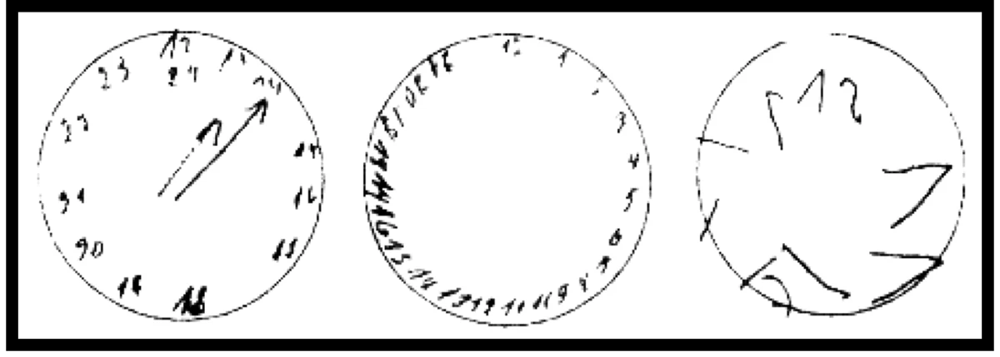

Alzheimer
Abschied vom Leben
ALLGEMEIN: Alzheimer (eine Form von Demenz) ist eine chronische, langsam fortschreitende Erkrankung des Gehirns, bei der es zu einem Untergang an Nervenzellen (sogenannte Neuronen) kommt. Eine Folge dieses Prozesses sind Störungen des Gedächtnisses, der Sprache, des Denkvermögens, der Bewältigung alltäglicher Handlungen und der Orientierung. Sie ist eine der größten sozial- und gesundheitspolitischen Herausforderungen der kommenden Jahrzehnte und kann jeden von uns treffen. Diese Kranken bedürfen vor allem unserer Hilfe/Verständnis. Wenn sich eine Verkalkung im Gehirn entwickelt, merkt sie der Betroffene nicht, nur seine Umgebung. Ein Teil der Erkrankung ist ja, dass man sich selbst nicht als krank einstuft. Die Krankheit tritt meist zwischen dem 40. und 90. Lebensjahr auf und kommt bei Frauen häufiger vor als bei Männern. Unter Demenz werden laut Alzheimer Forschungs-Initiative (AFI) mehr als 50 verschiedene Störungen der geistigen Leistungsfähigkeit summiert. Es ist also der Überbegriff. Alzheimer sei mit rund zwei Drittel aller Fälle wiederum die häufigste Form der Demenz. Die Zahl der Demenzkranken wird nach einer Studie der WHO rasant steigen. Bis 2030 dürften rund 40 % mehr Menschen mit Demenz leben als heute. Anmerkung: Bei Anzeichen von Gedächtnisstörungen empfehlen Experten grundsätzlich die Schilddrüse der Betroffenen zu überprüfen, (Über-, Unterfunktion, Hashimoto).
URSACHEN: Je nachdem, ob die Ursache durch krankhafte Veränderungen im Gehirn selbst oder durch andere Erkrankungen hervorgerufen wird, spricht man von:
- Vaskuläre Demenz: Ursache sind Gefäßveränderungen im Gehirn. Es kommt zu Durchblutungsstörungen und dadurch zum Absterben von Gehirnzellen. Sie beginnt meist plötzlich. Die Symptome nehmen oft sprunghaft zu, manchmal allerdings auch schleichend und langsam.
- Sekundäre Demenz: Hirnleistungsstörungen können durch Stoffwechselerkrankungen der Leber oder Niere, Infektionskrankheiten (Meningitis, Enzephalitis), Schilddrüsenunterfunktion, Tumore, sowie hirnorganische Erkrankungen, wie Parkinson oder Verletzung entstehen. Stille Entzündungen. Aber auch Menschen mit Schwerhörigkeit und unbehandeltem Hörverlust entwickeln - laut einer Studie bis zu fünfmal häufiger eine Demenz. Depression. Pessimismus: Wer sich ständig Sorgen macht und negative Gedanken hat, erhöht sein Risiko. Ängste, Eisen-, Salz-, Vitamin B12-, Vitamin D3-, Flüssigkeitsmangel, Diabetes (Typ 2 erhöht das Risiko um bis zu 80 %), Bluthochdruck und Übergewicht können eine Rolle spielen. Ebenso auch eine Übersäuerung des Gehirns (siehe Entsäuerung). Alles, was gegen diese Zivilisationskrankheiten hilft, hilft auch gegen Alzheimer. Dicke Menschen (BMI > 30/siehe Übergewicht) haben ein doppelt so hohes Risiko an Demenz zu erkranken als Dünne (Skandinavische Studie), ebenso Schlafmangel und Rauchen. Hinweis: Eine frühzeitige Diagnose ist hier äußerst wichtig.
- Frontotemporale Demenz: Die Erkrankung beginnt im Stirn- und Schläfenbereich des Gehirns (frontaler und temporaler Lappen). Typisch sind anfangs Veränderungen der Persönlichkeit, des Sozialverhaltens und der sprachlichen Fähigkeiten.
- Primäre Demenz kann durch die vielseitige Verwendung von Aluminium in unseren Küchen (Töpfe, Folien etc.) begünstigt werden. Aluminiumwert im Blut bestimmen lassen (ca. 25 €). Normbereich der Vollblutanalyse: 0-10 µg/Liter. Bei höheren Werten zur Ausleitung Mineralwasser mit über 30 mg/Liter Silicium trinken, z.B. Vulkania Heilwasser, Rogaska Donat, Baden Badener Quell, etc. oder Ackerschachtelhalmtee (Zinnkraut) trinken.
Vergiftungen (z.B. Alkohol, Schwermetall etc.). Nach Dr. Klinghardt wurden im Gehirn von Alzheimer-Patienten viermal so hohe Werte an Quecksilber gefunden, wie bei anderen Patienten: Alzheimer als Folge einer Quecksilbervergiftung (durch Amalgam, siehe Zähne/Amalgamausleitung). Chlamydien/Mund Behandlung siehe Ölschlürfen, In einer Studie haben Forscher der Uni Greifswald den Zusammenhang zwischen Alzheimer und der Zahnfleischerkrankung Parodontitis festgestellt. Die rechtzeitige Behandlung beim Zahnarzt sei daher das A und O, so die Wissenschaftler. Schwerhörigkeit: Wichtigster Risikofaktor für Demenz und muss mit einem Hörgerät behandelt werden . (NDR Visite vom 21.09.2021) Nebenwirkung von Medikamenten (Arzt befragen). Oft ist der Cholesterinwert (zu viel LDL ist Gift fürs Gehirn) sowie der Blutdruck erhöht. Mehr Bewegung senkt nicht nur den Blutdruck, sondern auch das LDL-Cholesterin.
Wissenschaftler am Techn. Institut in Massachusetts (USA) haben einen Mangel an Acetylcholin festgestellt. Cholin ist ein Bestandteil des Lecithins und dient im Gehirnstoffwechsel zur Bildung einer Botensubstanz, die zwischen Gehirn, Nerven und Organismus vermittelt. Ausreichend Cholin (Vitamin B) sorgt im Blut für geistige Frische, beugt vorzeitigen Alterungsprozessen vor und hält den Geist fit. Fehlt dieses Gehirnfutter, dann sterben Gehirnzellen ab und die Alzheimer Krankheit nimmt ihren Lauf. Typische Warnzeichen für einen Cholinmangel sind Konzentrationsschwäche, Gereiztheit, Schlafstörungen, Vergesslichkeit, Kreislauf- und Herzbeschwerden, Kopfschmerzen, Ohrensausen und chronische Verstopfung. Ausreichend Cholin sorgt im Körper für eine funktionierende Fettverwertung der Leber und niedrigen Cholesterinspiegel. Viel Cholin ist enthalten in: Leber, Fisch (Hering, Thunfisch), Eigelb, Weizenkeime, Sojabohnen, Erbsen und Bohnen. Mehr Power für die grauen Zellen liefern auch Nüsse, Birnen, Auberginen, Hafer und Dinkel. Hohe Homocystein-Werte gelten als unabhängige Risikofaktoren für Demenz allgemein, sowie ganz speziell für die Alzheimer – Demenz. Im Alter lässt die Nierenfunktion nach, dadurch steigt der Homocysteinspiegel natürlicherweise an (um etwa 10 % pro Dekade). Bei Nierenschwäche wird das Homocystein nicht mehr ausreichend abgebaut und ausgeschieden. Als Zellgift kann es unter anderem die Hirnleistung schädigen und für Demenz und Alzheimer mitverantwortlich sein. Hinweis: Erhält der Körper nicht genug B-Vitamine und Folsäure, so steigt der Homocysteinwert an und die Symptome verstärken sich. Die „Framingham-Studie“ hat eine Erhöhung des Demenz-Risikos um 40 % ergeben, wenn der Wert im Blut um 5 µmol/Liter ansteigt. Homocystein-Wert daher überprüfen lassen. Bei Werten über 10 µmol/Liter mit einer kombinierten Gabe von Vitamin B6, B12 und Folsäure (z.B. Homocyvit® Tropfen) behandeln oder Telcor® Arginin plus Tabletten. Es mehren sich die Hinweise, dass auch ein Thiaminmangel (Vitamin B1) vorliegt (Vitamin B-Komplex ratiopharm® Kapseln/Arzt befragen).
Nach einer Studie der Uni Klinik des Saarlandes – Professor Dr. Thomas Bayer – leiden Alzheimer-Patienten unter Kupfermangel/Arzt befragen. Tipp: Kupferreich essen. Das Spurenelement steckt vor allem in Nüssen (täglich eine halbe Handvoll), in Aprikosen (drei pro Tag) und in Naturreis. Zink nicht länger als 3 Monate einnehmen, sonst wird der Kupferstoffwechsel negativ beeinflusst. Auch Natriummangel (Kochsalz) kann Demenz auslösen, insbesondere wenn die Symptome relativ plötzlich auftreten und mit Verwirrtheit und Desorientierung einhergehen (siehe Alter). Wissenschaftler sehen heute auch in einem hohen Zuckerkonsum mit eine Ursache für die zunehmende Demenz -Erkrankung. Die Vermutung, dass Gehirnerkrankungen im Darm entstehen, gibt es schon länger, denn Patienten klagen häufig über Magen-Darm Probleme, bevor die Alzheimer-Erkrankung ausbricht. Ob die Mikrobiom-Veränderungen Ursache oder Wirkung sind, muss sich noch zeigen. Alzheimer Todesfälle sind häufiger bei Menschen aufgetreten, die über 15 Jahre im Umkreis von 50 m unter Hochspannungsleitungen lebten (Schweizer Studie/Uni Bern, ZDF 13.11.2008). Tipp: Elektro –Netzfreischalter für den Schlafbereich im Sicherungskasten einbauen lassen (Elektriker befragen), damit Sie - frei von Elektrosmog - schlafen können. Eine Hormonersatztherapie kann das Risiko erhöhen. (Finnische Studie) Auch eine erbliche Belastung, sowie eine Pilzerkrankung oder eine Störung des Eiweiß-Stoffwechsels kann eine Rolle spielen. Viele Patienten bekommen auch Alzheimer als Nebenwirkung von Parkinsonmedikamenten. Blutdrucksenkende und entwässernde Arzneimittel verursachen häufig geistige Leistungsstörungen, indem sie die Gehirndurchblutung reduzieren (Paradoxe Reaktion - Arzt befragen). Auch Statine passieren die Blut-Hirnschranke! Ebenso Antikonvulsa und Antidepressiva bei langfristiger Einnahme. Stress und Kummer begünstigen Alzheimer. Das Rätsel Alzheimer (WDR vom 28.07.2008). Hiernach ist Alzheimer eine Entzündung im Gehirn, die durch entsprechende entzündungshemmende Mittel gelindert wird (Rheumapatienten haben 6 x weniger Alzheimer, siehe Entzündungen). Riechstörungen: Forscher der Technischen Uni Darmstadt haben herausgefunden, dass die für die Krankheit typischen Eiweißablagerungen schon sehr früh in der Nasenschleimhaut feststellbar sind (Riechtest/HNO-Arzt). Dort können die Tau Proteine mit einem Nasenspray oder Tabletten so verfärbt werden, dass sie mit einem Licht-Endoskop frühzeitig identifiziert werden können. Test: Zimtstangen in etwa 5cm Entfernung vor die Nase halten und schnuppern. Wer das Aroma erst in 20cm Entfernung riechen kann, sollte das seinem Hausarzt sagen. Hirndruck untersuchen lassen. Ursache dafür ist, dass bei ca. 5 % der über 65-jährigen Patienten, ein gestörter Kreislauf des Hirnwassers vorliegt. Ein Liquor-Ablass Test sorgt meist für Klarheit. Dabei saugt der Arzt etwas Hirnwasser aus dem Rückenmarkskanal ab und senkt so den Druck im Gehirn. Verschwinden die Symptome in den Tagen darauf, steht die Diagnose fest (Professor Dr. Kehler, Asklepiosklinik, Hamburg-Altona/NDR-Visite vom 11.02.2014). Chronischer Schlafmangel: Ein müdes Gehirn funktioniert nicht gut. 40 % der Demenzkranken klagen über Schlafstörungen und werden mit Benzodiazepinen oder Antidepressiva behandelt, die leider Alzheimer fördern können. Schlafapnoe kann Alzheimer auslösen. Forscher haben einen Zusammenhang zwischen Alzheimer-Demenz und Schlafstörungen entdeckt. Demnach leidet jeder fünfte Deutsche unter der sogenannten Schlafapnoe, bei der nachts immer wieder der Atem bis zu 30 Sekunden lang aussetzt. Die Studie beweist, dass die Krankheit dem Gehirn langfristig schadet (siehe Schlaflosigkeit). Ein Zungenschrittmacher verhindert sie (Arzt befragen). Im Schlaf wird das Gehirn von schädlichen Eiweißablagerungen gereinigt, die für Demenz verantwortlich sind, bei gestörtem Schlaf funktioniert dieser Prozess nicht. Schlafapnoe kann auch hohen Blutdruck auslösen. Aber auch Übergewicht, Bluthochdruck, Diabetes, Depressionen und soziale Isolation, Rauchen und Alkoholmissbrauch gehören nach WHO ebenfalls dazu. Ein gesundes Herz beugt Alzheimer vor! Was gut fürs Herz ist, nutzt dem Gehirn. Damit das Gehirn gut funktioniert, benötigt es Sauerstoff und Nährstoffe. Diese werden über den Blutkreislauf in den Kopf gepumpt. Probleme mit den Blutgefäßen erhöhen daher auch das Alzheimer-Risiko. Bluthochdruck, Herzrhythmusstörungen und erhöhte Cholesterinwerte sollte man daher regelmäßig untersuchen und behandeln lassen.
SYMPTOME: Bei Alzheimer sterben Nervenzellen im Gehirn ab. Betroffene werden zunehmend vergesslich, verwirrt und orientierungslos. Die Demenz verläuft in Phasen und manchmal in Schüben. Es gibt die leichte, mittlere und schwere Phase. Erste sprachliche Anzeichen sind das Vertauschen oder Auslassen von Worten. Die Aussprache wird undeutlich. Namen vergessen, Brille verlegt, Geldbeutel liegen gelassen - so beginnt häufig eine Hirnerkrankung. Sie vergessen alles, erinnern sich an nichts. Zu Beginn der Erkrankung zeigt sich vor allem die Gedächtnisleistung beeinträchtigt (Kurzzeit). Im weiteren Verlauf kann es zu motorischer Unruhe, Geruchsverlust, Orientierungslosigkeit, Sprachstörungen und Stimmungsschwankungen/Depressionen kommen. Auch Konzentrations- und Bewegungsstörungen wie Parkinson können auftreten. Der Schlaf-Wach-Rhythmus ist oft verschoben. Im fortgeschrittenen Stadium kann eine Demenz bis zur Vollzeitpflege führen. Experten empfehlen grundsätzlich bei Anzeichen von Gedächtnisstörungen die Schilddrüse der Betroffenen zu überprüfen (Über-Unterfunktion, Hashimoto). Nachgedacht: Im Sommer 2019 traf ich in der Bopparder Rheinanlagen eine Bekannte mit ihrem schwer demenzkranken Mann, der im Rollstuhl saß. Sie wurde begleitet von ihrem Sohn, der täglich nach seiner Dienstzeit die Eltern aufsucht, um seinen Vater zu pflegen. Auf die Frage: Weiß Dein Vater noch, dass Du sein Sohn bist, antwortete er wie folgt: Das ist nicht wichtig, wichtig ist, dass ich weiß, dass er mein Vater ist.
Uhrentest

Bei diesem Test werden die Patienten gebeten, eine Uhr zu zeichnen und sie auf eine vorgegebene Uhrzeit einzustellen, z.B. 11.10 Uhr. Entspricht das Ergebnis ungefähr der 1. abgebildeten Uhr, so spricht man von einer frühen Demenz. Im Falle der zweiten Uhr von einer moderaten und sieht die Uhr aus, wie in der dritten Abbildung, spricht man von einer schweren Demenz. Die Handschrift ist so unverwechselbar, wie unser Fingerabdruck. Ein verändertes Schriftbild zeigt sich bereits Jahre vor anderen Symptomen.
ERNÄHRUNG: Auf Essen und Trinken achten! Demenzkranke haben häufig ein verringertes Hunger- und Durstgefühl. Vollkorn, Dinkel, Buchweizen, Möhren, Avocado, Auberginen, Rucola, Zucchini, Orangen, grüne Blattgemüse, Hülsenfrüchte (Kichererbsen), Kohl, süße Mandeln, Nüsse, Datteln, Paranüsse, Aprikosen, Zitrusfrüchte, Paprika, Lecithin, viel Omega-3-FS essen (siehe Öle/Fette). Sie schützen uns vor Demenz und bekämpfen Entzündungen im Körper. 8-11 % im Blut gelten als normal (NDR-Visite vom 24.07.2018). Fisch (Makrele, Hering, Lachs, Thunfisch, 2 x wöchentlich). Er enthält reichlich mehrfach ungesättigte Fettsäuren. Diese hemmen Entzündungsprozesse im Gehirn. Je mehr Fisch auf den Tisch kommt, umso besser. Pilze und Heidelbeeren, Linsen, und Spinat. Da dunkle Schokolade freie Radikale abfängt, unterstützt sie unser Gehirn mit Sauerstoff und damit seine Funktionen. Weitere Studien haben ergeben, dass schon 1 Tasse Kakao täglich hilft, kognitive Fähigkeiten während des Alters zu bewahren, was zum Schutz vor Demenz beiträgt. Cholin - die Nahrung für unser Gehirn. Rotes Palmöl/Reformhaus bewirkt einen Antiplaque Effekt (1 Esslöffel/Tag). Kokosöl liefert dem Gehirn wichtige Energie (MDR/Hauptsache gesund vom 06.10.2016). Leinöl. Essen Sie nicht, ohne vorher zu riechen! Mit Kurkuma würzen! Forscher der Uni Los Angeles haben herausgefunden, dass Kurkuma (Gelbwurz) Ablagerungen im Gehirn auflöst. Mediziner empfehlen täglich ½ Teelöffel Kurkuma zu sich zu nehmen.Tipp: Verfeinern Sie damit Ihr Essens. Anmerkung: In Indien wird viel Curry (enthält Kurkuma) gegessen, die Alzheimer Erkrankung ist dort auffallend weniger verbreitet. Viel Ingwer essen. Entscheidend ist die regelmäßige Einnahme, ideal ist täglich ein daumengroßes Stück im Essen oder Tee. Gelee royal, 5 g/Tag hilft gegen Demenz. Japanische Studie - MDR/Hauptsache gesund vom 06.10.2018. Starkes Gedächtnis mit folgenden Superbeeren: Schon eine Handvoll Früchte pro Tag kann unser Gehirn und unsere Gesundheit schützen. Erdbeeren, Brombeeren, Blaubeeren, Stachelbeeren, Himbeeren und Johannisbeeren. Wer täglich mindestens einen Apfel isst, verringert das Risiko an Alzheimer oder Demenz zu erkranken.
MEIDEN: Weizen wirkt neurotoxisch (Gluten-Unverträglichkeit). Milch, bei Menschen, die viel Milch trinken ist das Alzheimer – Risiko um 21 % höher (Schwedische Studie – ARTE vom 24.7.2018). Starker Alkoholkonsum verdreifacht das Risiko. Getränkedosen/Aluminium. In vielen Limonaden, Obstsäften oder Weinen, wie auch in den meisten Brausetabletten sind Citrate (Salze der Zitronensäure E330) enthalten. Citrate können die Resorption von Aluminium begünstigen. Diese Wechselwirkung kann zu Verwirrung und sogar zu Krämpfen führen. Aluminium ist ein Nervengift, Partikel können ins Gehirn eindringen. Vorsicht bei langfristiger Einnahme von Magensäurehemmern/PPI. Auch sie enthalten geringe Mengen Aluminium in Form von Aluminiumfarblack Chochenillerot A (E124) sowie das Aluminiumsalz Chinolin gelb (E104).
- Aspartam meiden (E951) und
- Glutamat (E620-E623). Bei Alzheimer-Kranken wird es in erhöhtem Maße ausgeschüttet und schädigt dadurch die Nerven (z.B. Würze).
- Eine weitere Ursache sind zu viele sogenannte Freie Radikale: Hierbei handelt es sich um aggressive Stoffwechselrückstände, die gesunde Zellen angreifen (siehe Krebs).
- Bei allen neurologischen Erkrankungen ist der Darm beteiligt. Besonders die Propionsäure spielt hier eine wichtige Rolle. Sie stärkt das Immunsystem. Zweimal täglich eine Kapsel Propicum/Apotheke. einnehmen. Auch Komplikationen durch Chlostridien sind vergesellschaftet mit Demenz.
- Omega-6-FS (siehe Öle/Fette): Die höchste Fettkonzentration in unserem Körper weist unser Gehirn auf und ist deshalb besonders anfällig für das so zerstörerische Werk dieser freien Radikalen. Erkrankungen wie Alzheimer und Parkinson erscheinen dadurch in einem ganz anderen Licht.
Wissenschaftler sehen heute auch im hohen Zuckerkonsum mit eine Ursache für die zunehmende Demenz Erkrankung. In zu großen Mengen kann Zucker die Eiweißstrukturen im Gehirn angreifen.
GETRÄNKE: Generell viel trinken (pro Kg Körpergewicht 30 ml), damit das Blut dünnflüssig bleibt und der ganze Körper/Gehirn besser durchblutet und mit Nährstoffen versorgt wird. Unser Gehirn besteht zu 85 % aus Wasser. Da das Durstgefühl herabgesetzt sein kann, besteht bei Alzheimer-Patienten die Gefahr der Austrocknung (siehe Alter). Alkoholfreies Bier (1-3 Gläser täglich), Tomatensaft (täglich 1 Glas), rote Betesaft, Rotwein, Misteltee (enthält Cholin), Melissentee, Salbeitee, Grüner Tee und Kaffee reduzieren (max. 3 Tassen pro Tag), typische Eiweißablagerungen/Gehirn.
Weitere Anregungen: Immer in Bewegung bleiben
Forschungsergebnisse aus aller Welt deuten darauf hin, dass Menschen, die körperlich aktiv sind, langfristig bessere Denk- und Gedächtnisleistung erbringen, selbst wenn sie nur spazieren gehen. Gute Ideen entstehen nicht am Schreibtisch, sondern beim Gehen. Niemals aufhören, neugierig zu bleiben. Nicht Faulenzen: Schon nach wenigen Tagen des Nichtstun sinkt der IQ um fünf Punkte. Das Gehirn geht auf Sparmodus. Jede Art von geistiger und körperlicher Beschäftigung kann eine demenzielle Entwicklung verbessern. Möglichst nicht isoliert leben. Forscher fanden heraus, dass 30 Minuten Lesen am Tag die Entstehung einer Demenz um bis zu fünf Jahre hinauszögern kann. Denn durch die geistige Auseinandersetzung mit Wörtern und vielen Themen werden im Gehirn Nervenverbindungen neu geknüpft bzw. gestärkt. Ein einfacher Merk-Trick mit einem Gummiball. Beim Lernen mit der rechten Hand und beim Abrufen der Information aus Ihrem Kurzzeitgedächtnis dagegen mit der linken Hand den Gummiball drücken. Verschiedene Gehirnhälften werden dadurch angeregt (US-Studie). Atemtrick: US Forscher haben herausgefunden, dass die Nasenatmung sofort das Gedächtnis stärkt. So geht's: atmen Sie tief durch die Nase ein. Stellen Sie sich nun vor, wie sie dadurch direkt Energie im Gehirn aufnehmen. Dann durch die Nase wieder ausatmen, zehnmal wiederholen. Risiko „Langeweile“: Wer häufig ein Gefühl von Langeweile hat, unterfordert sein Gehirn, denn es fehlen Anreize für die Steuerzentrale im Kopf. Dazu haben Hirnforscher einen pragmatischen Tipp parat: jeder sollte das tun, was ihm Spaß und Freude bereitet, das dann aber umso intensiver. Wer auch im Alltag regelmäßig Bücher liest, Freunde besucht und seine Freizeit so abwechslungsreich wie möglich gestaltet, verringert das Risiko um 38 % (Medical Mirror). Je mehr das Gehirn gefordert wird, desto geringer ist das Risiko für eine Demenz. Wer sich nicht fordert, baut ab. Freundschaften pflegen ist ebenso wichtig, wie eine gesunde Ernährung, um auch im Alter fit zu bleiben. Oft wird die Einsamkeit für ältere Menschen zum Problem. So kann das Demenz-Risiko auf das Doppelte ansteigen. Kontakte sind wichtiger als Tabletten. Die beste Frischzellenkur für unser Gehirn sind andere Menschen. In den „blauen Zonen“ (siehe Alter), also den Weltregionen, wo Menschen sehr alt werden, leben sie in sehr engen Verbünden. Jeder soziale Kontakt führt dazu, dass ich mir unheimlich viel merken und eine Menge wahrnehmen muss. Gestik, Mimik, Emotionen oder auch Inhaltliches. Was steht im Leben des anderen gerade an, worüber haben wir uns zuletzt unterhalten? Wo wollten wir uns gerade treffen? All das ist enorm wichtig für die Synapsenbildung im Gehirn. Tanzen und Singen hält uns und das Gehirn jung.
Prof. Dr. Korte empfiehlt die 5L: Laufen, lernen, lieben, lachen und Lachs, all, das stärkt den Kopf. Von Experten werden Balance-Übungen empfohlen. Denn dann wird das Gehirn gefordert, muss Signale von Augen, Gleichgewicht und Muskulatur zusammenbringen. Das verbessert die Hirnleistung. Sie können ihr Gehirn ganz leicht schon beim Zähneputzen trainieren, in dem sie dabei versuchen, je 1 Minute nur auf einem Bein zu stehen. Wer sich häufig mit Handarbeit beschäftigt, reduziert Gedächtnisverlust. Auch Beschäftigungen wie lesen, mit der Hand schreiben oder malen steigern die Gehirnaktivität. Der Blick aufs Alter beeinflusst das Alter, zumindest das biologische. Anders gesagt: Wer entspannt und positiv darauf schaut, fühlt sich auch jünger. Habe ich jedoch eine negative Einstellung zum Alter, macht mich das biologisch bis zu 7 Jahre älter.
Vorbeugung
Wichtig für das Gehirn ist Sauerstoff: Kräftig ein und gut, gut ausatmen (so als wolle man eine Feder wegblasen - siehe Atmung). Ansonsten entsteht ein Sauerstoffmangel im Gehirn (Universität of British Columbia). Kurzzeit-Fasten: einen besonders guten Gehirnschutz kann unsere Leber selbst produzieren: Die so genannten Ketonkörper, echte Energiebomben fürs Gehirn. Diese werden allerdings nur freigesetzt, wenn wir fasten. Schon nach 12 Stunden Fasten läuft die Ketonkörperfreisetzung auf Hochtouren, die dem Gehirn 20 % mehr Energie liefern als Glucose. Das geht praktisch im Schlaf, wenn man z. B. ab 18 Uhr abends bis zum nächsten Morgen 8 Uhr nichts zu sich nimmt. Noch besser ist es, 16 Stunden zu fasten. Sonstiges: Woran erkennt man ein gutes Pflegeheim? Augen, Ohren und Nase aufhalten. Gehen Sie ohne Anmeldung in ein Heim. Wie riecht es, wie benimmt sich das Personal, wie ist das Miteinander. Ist es freundlich und wohlwollend, kann man davon ausgehen, dass das Heim passt.
MEDIKAMENTE: Kupfertabletten, Homocyvit® Tropfen (Vitamin B6, B12, Folsäure), Magnesium. Ein Mangel erhöht das Risiko um 50 %. Mit Vitamin D3 plus K2 funktioniert das Gehirn besser - auch bei Verwirrtheit und Gangunsicherheit. Vitamin A, C, E. Ein Nikotinpflaster verbessert die Symptome bei Nichtrauchern um 46 % (ZDF 10.01.2012).spermidine Life® Kapseln für Ihre Zellerneuerung. Propicum® Kapseln (siehe Darm). Gingko biloba-Extrakt/Apotheke, mit einer Tagesdosis von 240 mg, wird nach ärztlicher Verordnung von der Krankenkasse bezahlt. Bei Einnahme von blutverdünnenden Medikamenten/Arzt befragen. Hericium/Reishi Heilpilzkapseln (Beratung/Bezug). Info: www.deutsche-alzheimer.de